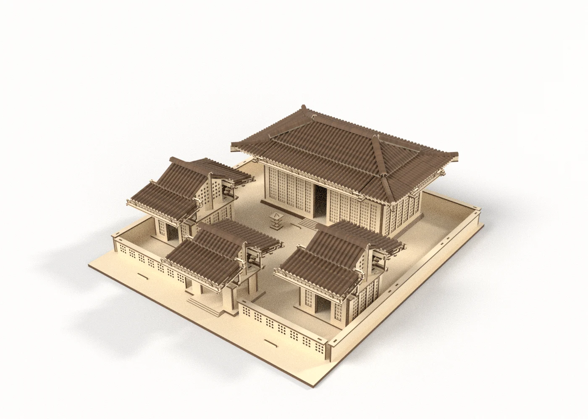
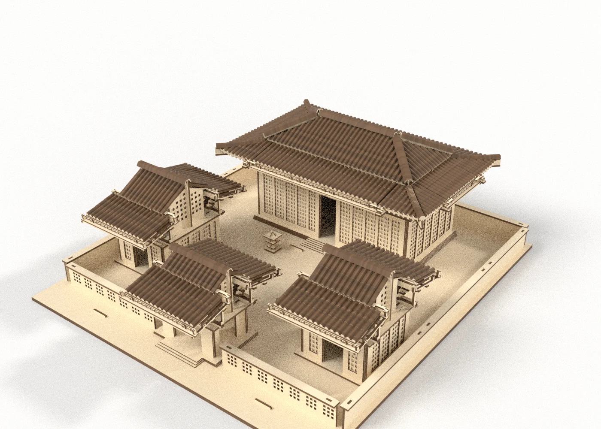
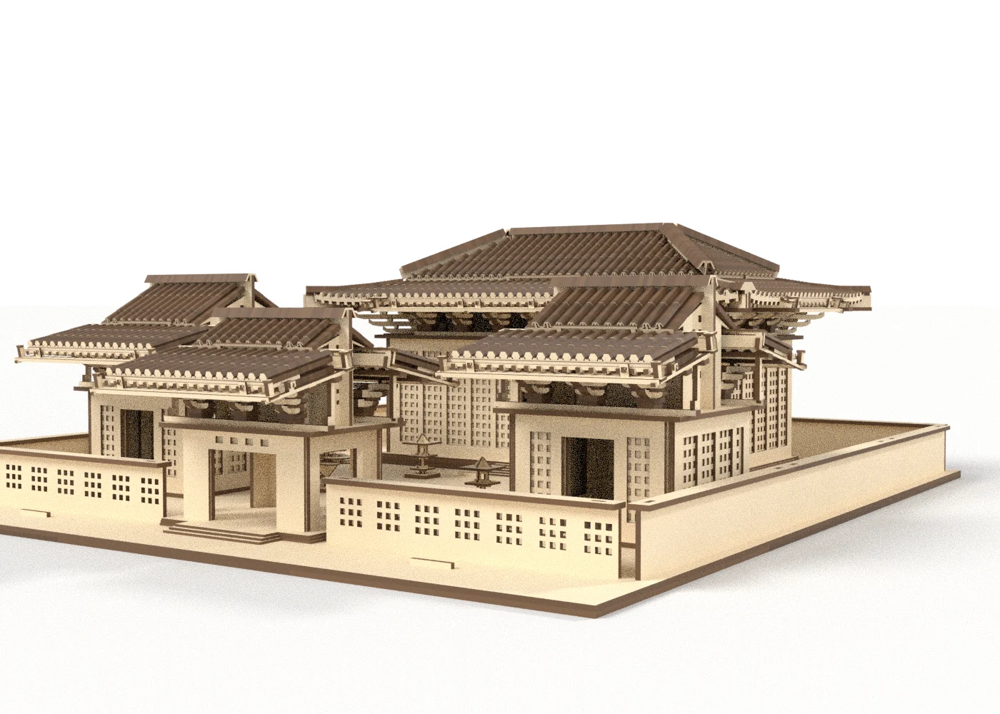
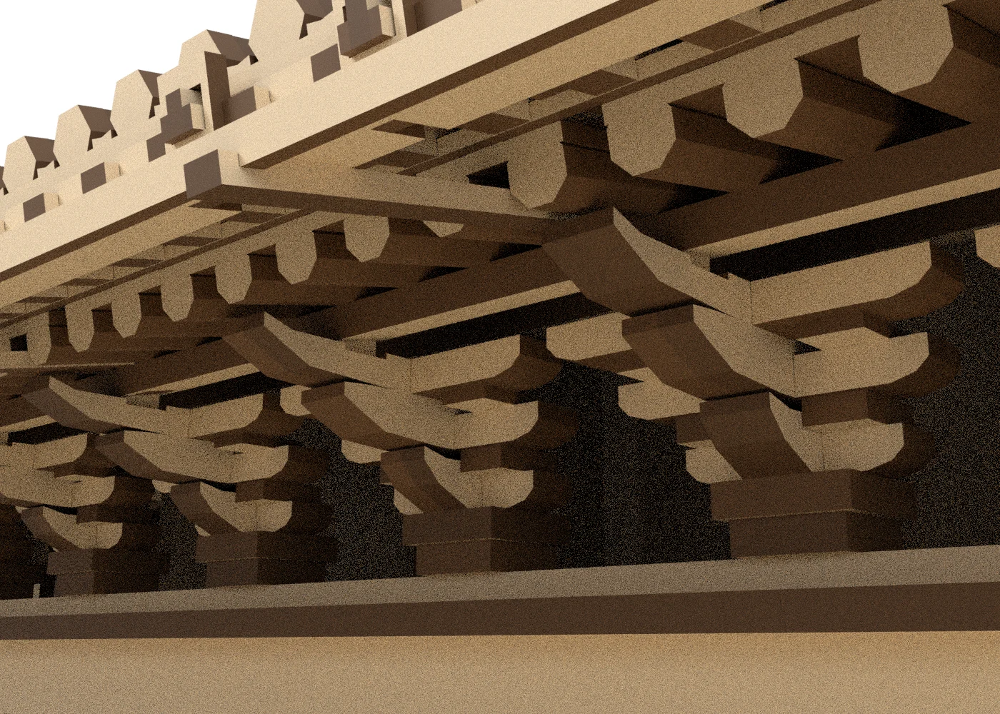
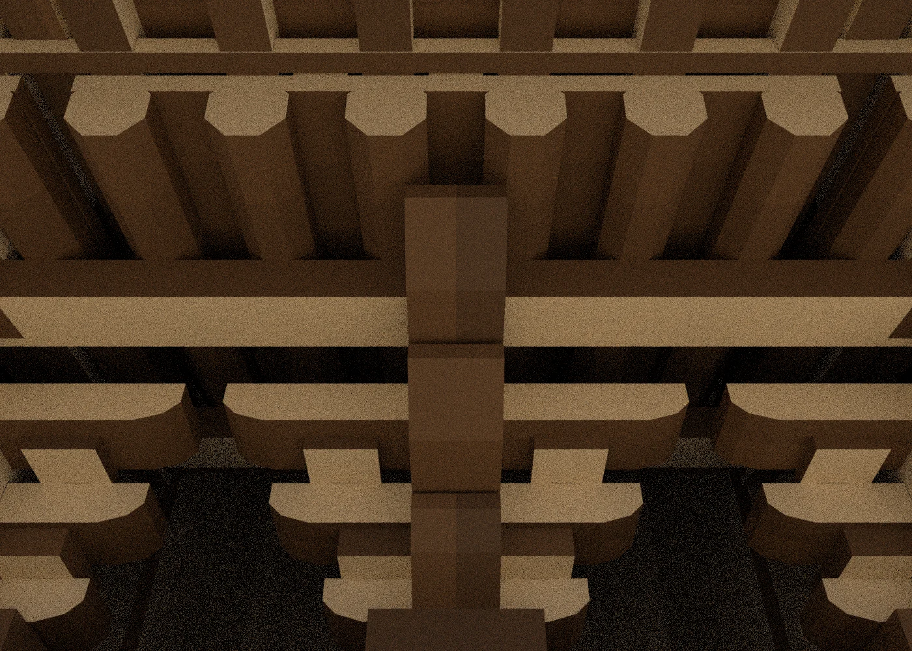
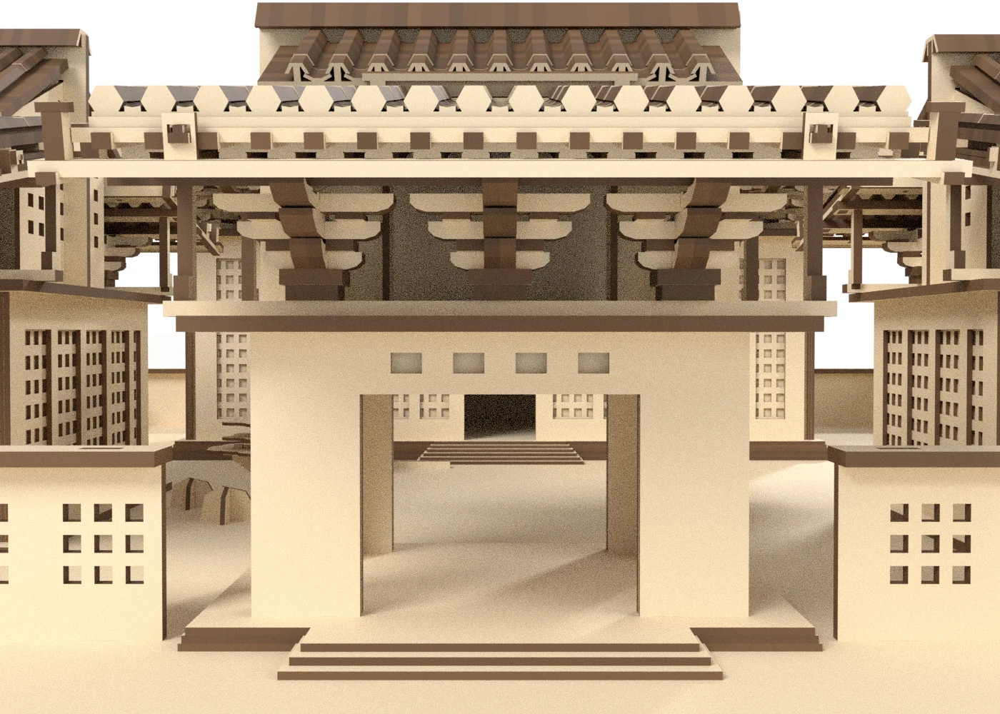
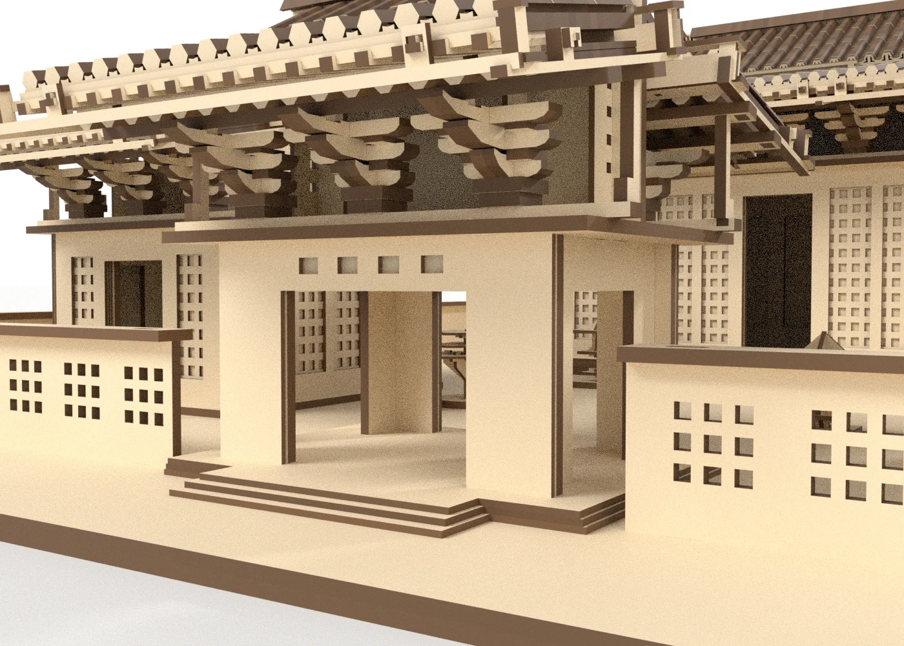

PLYWORLD / DESIGN PREVIEW
각진 기와의 궁궐
120° 각형 기와와 팔각 서까래, 겹겹의 공포로 구성한 2,689개 평판 부품 모형.
아래는 완성 형상의 정적 렌더 이미지입니다. 게임용 충돌표 계산과 최종 게임 검증은 아직 끝나지 않았으며, 이 페이지에서는 조립 게임이나 3D 회전을 제공하지 않습니다.
레이저 재단을 가정한 일부 결합부에 미세 간섭이 남아 있습니다. 실물 절단·조립·강도 시험 전에는 생산용으로 사용하지 마세요.












